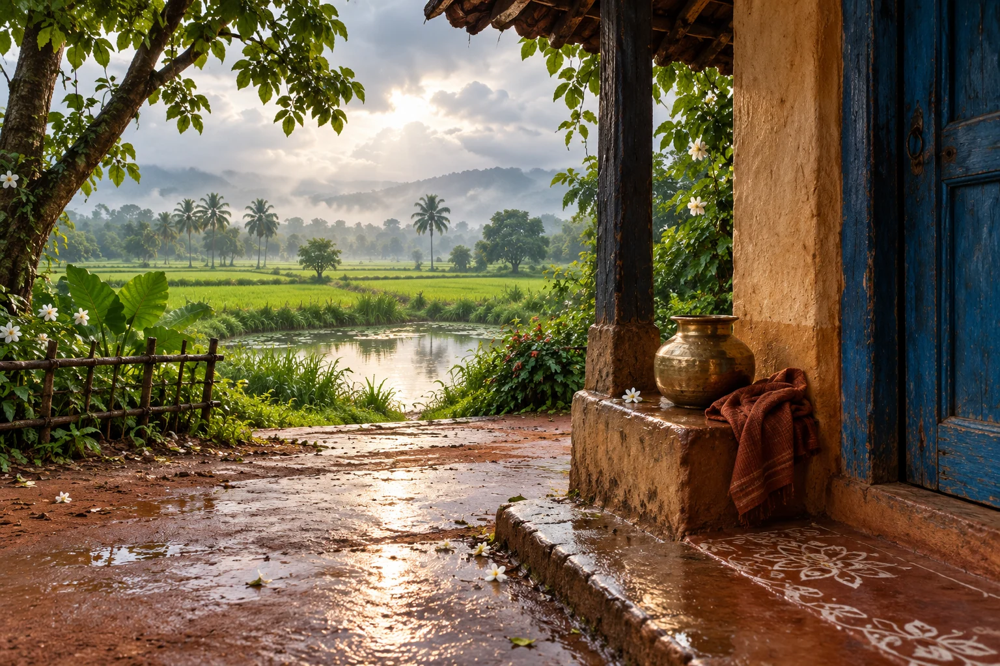

ଓଡ଼ିଆ
ଦୋକାନ
Narmada Nilotpalaବନ୍ଦ ହୋଇଗଲା ଦୋକାନ ସବୁ ଖୁସିର ପର୍ବରେ ପଡିଗଲା ପହଡ଼ ।
Read the poemThe fragrance of earth.
The voice of the heart.
“Poetry is an echo,
asking a shadow to dance.”
16 poems · Odia, Hindi & English

ବନ୍ଦ ହୋଇଗଲା ଦୋକାନ ସବୁ ଖୁସିର ପର୍ବରେ ପଡିଗଲା ପହଡ଼ ।
Read the poemगांव का सुनसान प्लेटफार्म, बरसती बूँदों की छांव,
Read the poemEvery evening late into the night
Read the poem
 Kabita Live
Kabita LiveSeptember 2026
After the rain
A flower has fallen, but its fragrance has not finished travelling. Rain gathers the red earth into a small dark mirror. Nothing announces a beginning here; the courtyard simply opens its eyes again. A poem can arrive in just this way, after we have stopped waiting for it.
Cultural connection
Everyday Odisha: rain, earthen courtyards and the sensory memory of home.
 Kabita Live
Kabita LiveAugust 2026
The colour before the story
Before the story has a face, a hand gives it a border. A brush pauses above the cloth, holding a little red earth in its tip. Outside, the village carries on. Inside this small interval, patience becomes colour, and colour prepares a place for someone else's wondering.
Cultural connection
Raghurajpur is known for pattachitra, a painting tradition on prepared cloth.
 Kabita Live
Kabita LiveJuly 2026
Evening on the water
The boat has brought everyone home and is alone at last. A loose rope touches the water; the reeds make room for the evening. What remains after a day's work is not emptiness. It is the quiet in which the lake, and the person who crossed it, can breathe.
Cultural connection
Odisha's lagoon landscapes and fishing livelihoods; an imagined waterside scene, not an identified boat or community.
Stories, social observation and an invitation to younger readers.